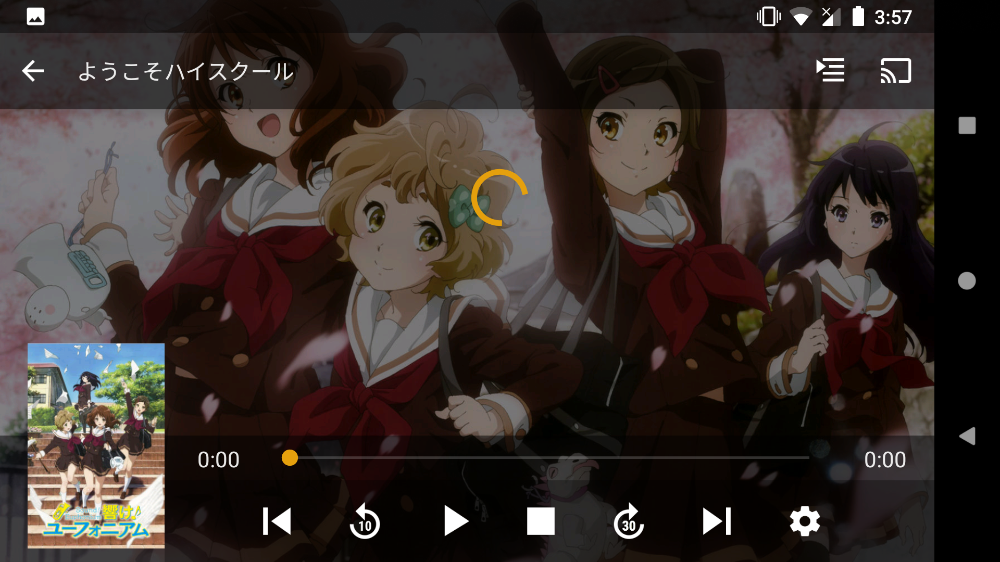

Android版
提示
Android版僅支援Android 4.1+

首次設定
- 若你以Google帳戶註冊的話，用
Continue with Google登入。 - 若你以Facebook帳戶註冊的話，用
Continue with Facebook登入。 - 若你以電郵註冊的話，用
Continue with Email登入。
登入後，將會看到以下畫面。
有3個選擇: 訂閱PLEX PASS, 啟動, 繼續使用試用模式
警告
你只用客戶端的話，是不需要PLEX PASS。請不要訂閱PLEX PASS。
啟動讓你可以在Android上直播Plex上的內容。使用試用模式的話，只能直播不多於5分鐘的內容，但可以先同步(下載)後再觀看。 要注意啟動需要支付5美元，但你所有Android的客戶端都可以使用相同的功能。

你可以觀看教學，或點擊跳過片頭跳過。
從左面掃出菜單，你可以關閉Enable Camera Upload。本伺服器不支援此功能。
在菜單下方選擇設定。
選擇Quality。

於Internet Streaming (Video Quality)選擇Maximum及Internet Streaming (Music Quality)選擇原始。
常見問題
如何選擇聲道或字幕?
在播放中，按選擇聲道或字幕。

如何選擇版本?
部份內容有不同的版本: TV、BD等，你可以打開菜單選擇。